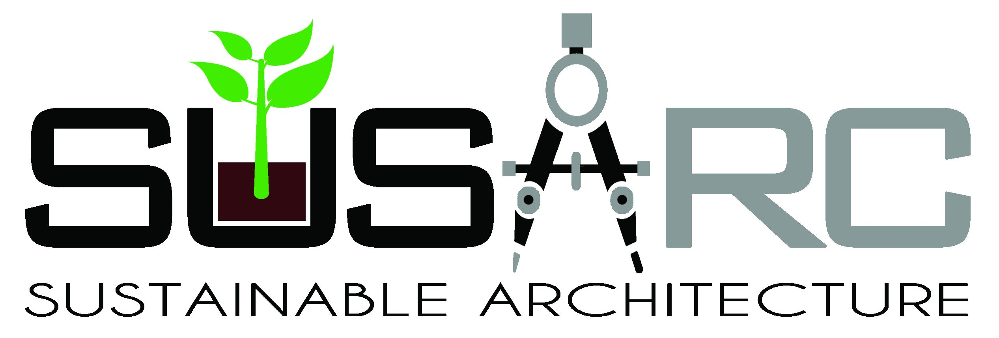

MKC
MICHAEL CLARK
UX Designer/Developer

About
About
My name is Michael Kenneth Clark. I am from New York City and graduated from the Rochester Institute of Technology. My areas of focus were Human Centered Computing and a bit of Software Engineering. I intend to both program and design for those who have trouble computing. My skills include mastery of HTML, CSS, Javascript, Prototyping. As I continue on through my experience in the world, I encounter more obstacles that I overcome each more challenging than the last. My interests include Video Games, Anime, and Humans Vs. Zombies (A moderated game of tag) His skillset consists of HTML, CSS, Javascript, Prototyping Design, Wireframing, Adobe Creative Cloud, and UX Research
Experience
LiveTiles
Customer Success Intern
May-Aug 2018
LiveTiles is a company that branches out to many parts of the world with the common goal of changing the way users access information. This opportunity granted the ability to interact with various website based projects both for the company and in some cases potential clients.
My involvement: Designed and published projects using HTML, CSS, JavaScript for a Microsoft SharePoint Intranet. The position also involved implementation of user experience-based principles to rebrand old templates to improve productivity and ease-of-use.
Erie Insurance
Enterprise Architecture Intern
May-Aug 2019
Erie Insurance is an insurance company in Erie Pensilvania that consistently strives to provide its customers and policy holders with the most efficient service at the lowest possible cost. Their Enterprise Architecture Innovation team handled projects revolved around the Mendix platform and Microsoft Hololens (an augmented reality headset).
My Involvement: Used the Mendix platform to make projects specifically for Hololens that the company could use with ease. This position also allowed work with a group for professional projects in the corporate world.
SusArcTec
UI Developer
Oct 2020-Nov 2021
SusarcTec is a startup company in Rochester NY that takes environmental heavy methodologies and transfers them to pen and paper. They are a child company of Digitronik labs and recently launched their big document collaboration app, Markadoc.
My involvement: Designed, developed, and contributed to both the look and feel of both the markadoc app and the website on both mobile and desktop views.
Fayevorites
Co-admin/Content Manager

Sept 2020-Present
This is a website dedicated to a community hosted by Anime Voice Actress, Faye Mata.
My Involvement: Collaborated with fellow editors. Edited and wrote pieces of content regarding roles, news, and lore.